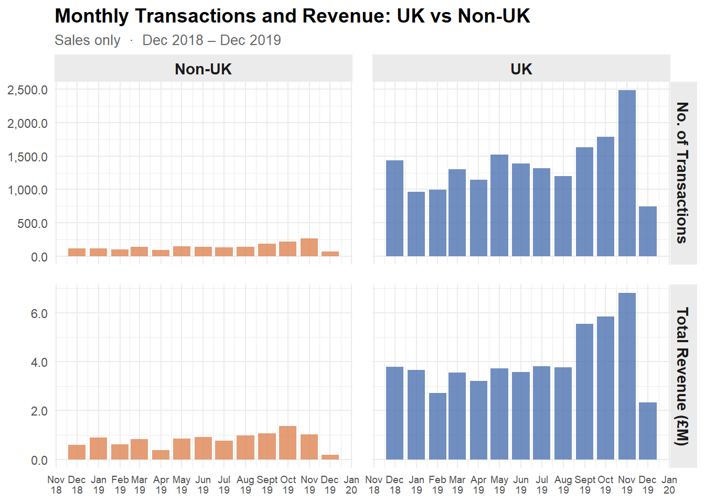

Your Project Title
1 Test
Ramos (n.d.)
2 Methodology
2.1 Data Collection and Sources
This report utilizes secondary data sourced from Kaggle, a prominent open-source data repository. The dataset comprises one year of historical sales transactions from Dec 2018 to Dec 2019 from a UK-based online retailer. This organize headquartered in London, specializing in gifts and homewares for both adults and children.
The business operates on a global scale and serves a dual customer base. Operations include both direct-to-consumer (B2C) sales, where individuals purchase for personal use, and business-to-business (B2B) transactions, where small businesses purchase items in bulk for retail distribution. Consequently, the transaction data is expected to exhibit diverse purchasing patterns, reflecting both individual consumer behavior and wholesale buying cycles.
Structurally, the dataset contains 536,350 observations and 8 variables. The data grain is each record represent a specific product and its associated quantity within a distinct transaction.
2.2 About the Dataset
To ensure data integrity and facilitate robust analysis, the raw dataset underwent a systematic cleaning and transformation process. Initially, variable names were standardized for consistency, and exact duplicate records were identified and removed to prevent observation bias and the double-counting of revenue.
Standardization & Deduplication: Column headers were standardized, and duplicate records were removed from the dataset.
Financial Feature Engineering: A discrete
revenuevariable was calculated for each line item (Price × Quantity).Temporal Decomposition: The original date string was parsed into a datetime format and decomposed into
year,month, andyear_monthfields to facilitate seasonal and time-series analysis.Transaction Classification: A
transaction_typeindicator was created to isolate legitimate sales from returns. Any record with a negative quantity or a transaction ID starting with “C” was flagged as aCancelled/Return.
Following the deduplication and feature engineering phases, the final prepared dataset consists of 531,150 observations across 13 variables.
2.3 Research Design and Purpose
Purpose: examine the sales performance of a UK-based online retail business over a 13-month period from December 2018 to December 2019.
Specifically, the analysis investigates transaction volume and revenue trends over time, and evaluates whether performance differs between the United Kingdom and international markets.
This study first adopts a descriptive analytical approach, utilising transactional records to summarise and visualise patterns in the data. Furthermore, further business insights are further investigated to identify key values that would inform future operational and marketing decisions.
2.4 Overview - Descriptive Analysis
2.4.1 Number of orders and total Volume by month
As presented in Figure 1, The UK market consistently dominated both metrics throughout the period, where a pronounced upward trend is observed from September 2019 onwards, with transactions and revenue peaking in November 2019 at nearly 2500 orders and approximately £6.8M respectively, likely driven by seasonal demand ahead of the holiday period.
The Non-UK market, while significantly smaller in absolute scale, demonstrated a gradual growth trajectory across 2019 with the upward trend merely mirror UK market. This suggests a slow but steady expansion of the international customer base.
2.4.2 General Quantitative metrics
According to Table 1 along with the graph we see in Figure 1, both the UK and Non-UK markets recorded their peak transaction volumes and revenue in November 2019, with the UK reaching 2487 transactions and £6.81M in revenue, while Non-UK peaked at 266 transactions. This Q4 surge is consistent with seasonal holiday like Christmas and New Year
Notably, Non-UK maximum revenue occurred in October 2019 (£1.37M) rather than November despite November having more transactions, suggesting a higher average basket value per order in October.
The minimum values for both regions fall in December 2019 across all metrics. This might not be a genuine business downturn but rather a data artefact, as December 2019 represents an incomplete month in the dataset.
| Metric | Non-UK | UK |
|---|---|---|
| Total Transactions | 1882.0 | 17908 |
| Mean Transactions/Month | 145.0 | 1378 |
| Min Transactions/Month | 73.0 | 744 |
| Max Transactions/Month | 266.0 | 2487 |
| Total Revenue (£) | 10434508.9 | 52346878 |
| Mean Revenue/Month (£) | 802654.5 | 4026683 |
| Min Revenue/Month (£) | 182853.1 | 2329216 |
| Max Revenue/Month (£) | 1374514.2 | 6806782 |
References
Ramos, Gabriel. n.d. E-Commerce Business Transaction. Accessed June 6, 2026. https://www.kaggle.com/datasets/gabrielramos87/an-online-shop-business.